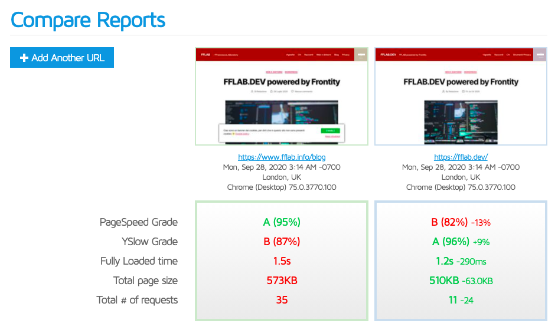

FRONTITY
Easy way from WordPress to React

👋 Hello!

I'm a front-end developer since 2001
Co-organizer of Piacenza WordPress Meetup
Teacher & IT specialist at Scuola MOHOLE Milano, since 2014
🐶 I have two dachsunds 🐶
I'm NOT so good with JavaScript!
FRONTITY
Frontity is a open source framework
to create websites using WordPress and React
with REST API, as a SPA
(Single Page Application).


Local setup
I've started from the Getting Started , checking to have all that needs in my computer (eg node.js) and installing with CLI.
npx frontity create my-app
This command create a directory called as you want, my-app in this case, with all the necessary files for the project, then we compile for an internal node server with the command:
cd my-app
npx frontity dev
the demo website will start in localhost, with the settings file frontity.settings.js configured like this
api: "https://test.frontity.io/wp-json/"

now you have only to change the name of the demo website with the one you want!
api: "https://MY-WORDPRESS-WEBSITE.COM/wp-json/"


THE THEMES
The themes are written in JavaScript - React, no PHP templates, and there are some ready to use, the default Mars-theme and Twenty-Twenty very similar to the WordPress PHP theme with the same name.
THE THEME OF FFLAB.DEV
For my blog fflab.info I use a custom (child theme) Twenty-Twenty. For fflab.dev with Frontity I tried to repeat that style customizations.
Actions on the theme
This is some code added by me:
/packages/twentytwenty-theme/src/components/styles/global-styles.js
for the colors of header and footer
#site-header,
.footer-nav-widgets-wrapper,
#site-footer{
background-color: #a00e05;
color: rgb(255, 255, 255);
}
SERVER FRONTITY
Ok, we can install Frontity on our computer just for test, but to publish it we need a server with server-side JavaScript.
SERVER FRONTITY
I've used Vercel as free hosting and I bought a domain too (I like .dev name!).
Vercel
Vercel have a CLI to install a Frontity application.
After a free registration in Vercel follow this documentation

My Vercel dashborad
Fast tour in my Vercel dashboard
Compare FFLAB.INFO e FFLAB.DEV
Lighthouse
My TO DO LIST
SECURITY: limit REST API access to the node server or exclude /user
THEME: create a personal theme
ADD-ONs: custom post type and widgets

Web slides powered by Reveal.js | https://fflab.github.io/pcmeetup-frontity/
See my post about Frontity (italian) here FFLAB